Introduction to Neural Networks
In this part, you will be introduced to neural networks—a family of models that, since 2012, have steadily achieved dominance in new applications, becoming the de facto standard in many fields.
Neural networks were first conceptualized in the 1970s. However, the technical capabilities and understanding required to train large-scale neural networks only emerged around 2011, providing a significant boost to their development. The collective set of neural network approaches and the broader scientific study of them is referred to as deep learning.
Deep learning is based on two key ideas:
- End-to-End Learning: Traditionally, machine learning solutions involved complex pipelines where each component was trained separately to solve part of a problem. Deep learning, however, enables training the entire system as a single entity, allowing all layers to be optimized together rather than stacking separate models on top of one another.
- Representation Learning: This approach automates the extraction of informative features that account for data structure, often leveraging unstructured or unlabeled data. Instead of relying on human experts to engineer features, deep learning models can learn them directly from raw data—sometimes even utilizing vast external data sources, such as all the texts on the internet.
Despite their flexibility, modern deep learning models are highly complex and bear little resemblance to their elegant predecessors from 2012. The evolution of neural networks has been driven by industrial demands, advances in computational power, and the increasing availability of large-scale datasets.
At the same time, theoretical understanding often struggles to keep pace with practical advancements. Many deep learning methods rely on empirical experimentation rather than rigorous mathematical proofs. The field is filled with engineering heuristics—ideas that work in practice but lack formal justification beyond the phrase: "it works this way, but not the other way." This has led to skepticism among some researchers.
Despite theoretical uncertainties, the results achieved with neural networks over the past decade are remarkable and impossible to ignore. Particularly impressive progress has been made in analyzing data with inherent structure, such as:
- Natural Language Processing (NLP): Language models, text classification, and translation.
- Computer Vision: Object detection, image recognition, and generative models.
- Audio and Speech Processing: Speech recognition and synthesis.
- Graph-Based Learning: Applications in recommendation systems, fraud detection, and social network analysis.
As neural networks continue to evolve, the scientific community is also developing theoretical frameworks to better understand their remarkable capabilities. In a later section, we will explore these theoretical perspectives in detail.
Introduction to Fully Connected Neural Networks
An artificial neural network (ANN) is a complex differentiable function that maps input features to output predictions. All parameters in a neural network can be tuned simultaneously and interdependently, allowing the network to be trained in an end-to-end manner.
In most cases, a neural network consists of a sequence of differentiable parametric transformations. This structure enables learning powerful representations of data, improving performance in tasks such as classification, regression, and generative modeling.
A careful observer might notice that this definition also applies to logistic regression and linear regression. This is a valid observation—both of these models can be considered simple neural networks that map input features to predictions or logits.
Neural networks are best understood as compositions of simpler transformations. They are typically constructed from modular components (layers) that stack together to form deeper and more expressive models. The two fundamental building blocks of neural networks are:
-
Linear Layer (Dense Layer): A linear transformation applied to input data. This layer consists of learnable parameters—a weight matrix
Wand a bias vectorb:x ↦ xW + b, whereW ∈ ℝd×k,x ∈ ℝd, andb ∈ ℝk.This transformation maps a
d-dimensional input vector to ak-dimensional output. -
Activation Function: A nonlinear function applied element-wise to the output of a layer. Activation functions introduce non-linearity, allowing neural networks to learn more complex patterns. Common activation functions include:
- ReLU (Rectified Linear Unit):
ReLU(x) = max(0, x) - Sigmoid Function:
σ(x) = 1 / (1 + e-x)
Activation functions enable neural networks to generate more informative feature representations. We will explore different types of activation functions and their properties in a later section.
- ReLU (Rectified Linear Unit):
Even the most complex neural networks are composed of relatively simple blocks, such as linear transformations and activation functions. This modular nature allows them to be represented as a computational graph, where intermediate nodes correspond to transformations.

The image above illustrates the computational graph for logistic regression. More complex neural networks follow a similar structure but involve deeper stacks of transformations.
Doesn't this structure resemble a layered cake of transformations? This is why they are called layers.
Computational graphs can be even more complex, including nonlinear connections between layers:

Let's break down what happens in a fully connected neural network.
Input refers to the data fed into the neural network. Typically, inputs are structured as a matrix ("objects-features") or a tensor (a multi-dimensional array). In some cases, a network may have multiple inputs. For example, if a neural network processes an image along with additional metadata, these inputs may be handled differently, making it logical to define multiple entry points in the computational graph.
The input data X0 is then processed through two linear layers, generating intermediate (hidden) representations X1 and X2. These are also referred to as activations in the literature (not to be confused with activation functions).
Each of these representations, X1 and X2, undergoes a nonlinear transformation, producing new intermediate representations, X3 and X4. The transition from X0 to these new matrices (or tensors) can be viewed as generating more informative feature representations of the original data.
The representations X3 and X4 are then concatenated, meaning the feature representations for all objects are combined.
Next, another linear layer and an additional activation function are applied. The final result is passed to the output layer, which delivers the network's prediction to the user.
Unfortunately, there is no universally agreed-upon terminology in the literature.
For example, we could define a single indivisible layer as the combination of a linear layer and an activation function—since we almost never use a purely linear layer without non-linearity. In fact, in frameworks like Keras, activation functions can be specified directly as a parameter within a linear layer.
Additionally, some sources refer to what we call intermediate representations as layers. However, we believe that intermediate results Xi are better described as representations because they constitute new feature descriptions of the original input objects.
Furthermore, in all major neural network frameworks, layers are defined as transformations rather than stored representations. For this reason, we consider layers to be the transformations that link intermediate representations.
Real-World Example: GoogLeNet (Inception-v1)
Here is a real-life example of a complex neural network. GoogLeNet (also known as Inception-v1) achieved state-of-the-art (SotA) results in the ILSVRC 2014 ImageNet challenge.

In the diagram above, each block represents a relatively simple transformation, while the white blocks indicate the inputs and outputs of the computational graph.
Modern neural networks have grown even more complex, but they are still composed of relatively simple building blocks—just like GoogLeNet.
Note: In general, a neural network can be thought of as a complex function—or equivalently, a computational graph. In some highly non-trivial cases, breaking it down into layers may not make sense.
One such example is weight-agnostic neural networks (WANN), introduced in the paper Weight Agnostic Neural Networks, NeurIPS 2019.

The illustration above shows the structure of WANNs, which challenge the traditional assumption that neural networks require weight tuning to perform well.
A neural network composed exclusively of linear layers and activation functions is called a fully connected neural network or a multilayer perceptron (MLP). Lets talk more about the perceptrone and multilayer perceptron.
Feedforward Networks
The simplest kind of ANNs from the point of view of their theoretical analysis are feedforward networks. Often the network architecture is composed of layers. The input layer consists of neurons that get their inputs directly from the data. So for example, in an image recognition task, the input layer would use the pixel values of the input image as the inputs of the input layer. The network typically also has hidden layers that use the other neurons' outputs as their input, and whose output is used as the input to other layers of neurons. Finally, the output layer produces the output of the whole network. All the neurons on a given layer get inputs from neurons on only a single (lower) layer.
We will return to multilayer networks in a little while, but first we'll study the simplest possible neural "network" which consists of a single neuron.
Perceptron: The Mother of all ANNs
A perceptron is a feedforward neural network that consists of a single basic neuron. It was among the very first formal models of neural computation and because of its fundamental role in the history of neural networks, it wouldn't be unfair to call it the "Mother of all Artificial Neural Networks". It can be used as a simple classifier in binary classification tasks. A classic neural network method is the Perceptron algorithm, introduced by Rosenblatt in 1957, which can be used to train a perceptron.
The perceptron neuron is simply the above basic neuron model with the step function as the activation function.
In the Perceptron algorithm, for which pseudocode is given below, each misclassification leads to an update in the parameter vector w. If the predicted output of the neuron is 1 when the correct class is y=–1, then the input vector x is subtracted from the weight vector. Similarly, if the predicted output is –1 when the correct class is y=1, then the input vector x is added to the weight vector. (Recall that vector subtraction and addition simply means the element-wise subtraction or addition of the two vectors.)
perceptron(data):
1: w = [0, ...,0] # array of size p
2: while error(data, w) > 0:
3: (x,y) = choose_random_item(data)
4: z = w[0]x[0] + ... + w[p-1]x[p-1]
5: if z ≥ 0 and y = -1: # -1 classified as 1
6: w = w − x # subtract vector x
7: if z < 0 and y = 1: # 1 classified as -1
8: w = w + x # add vector x
9: return(w)
In practice, it is impractical to choose random training data points on line 3 of the algorithm because this may lead to choosing correctly labeled examples most of the time, which is a waste of time since they lead to no updates in the weights. Instead, a better method is to iterate through the training data and as soon as a misclassified item is found, do the required update.
It can be theoretically proven that if the data is linearly separable, then the algorithm is guaranteed to stop after a finite number of steps and produce a weigth vector that correctly classifies all the training instances.
Use the Perceptron template on TMC. (You'll find the necessary data files in the TMC template.)
The file mnist-x.data contains 6000 images from the popular
MNIST dataset, each
of which is given on a single line in the file. Each image consists
of 28 × 28 pixels listed row-by-row, so each line in the file
contains 784 values. Each pixel is either black (–1) or white
(1). The file
mnist-y.data contains the correct class value (0-9) of each
of the 6000 images.
Use the first 5000 images as training data and the last 1000 as test data.
-
Implement the perceptron algorithm in the
Perceptronclass. -
Modify the
train()method in classPerceptronso that it learns to distinguish number 3 from number 5. (Notice that the variabletargetCharcan be set to be one of these classes whileoppositeCharshould be the other. This will set the class label as 1 and –1 as is required in the Perceptron algorithm. Images representing other numbers are ignored.) Try to get a classification error around 5–15 %. - Try other pairs of number than 3 vs 5. Which numbers are easiest to classify and which are the hardest?
Now implement a nearest neighbor classifier for the MNIST data used in the Perceptron exercise.
Recall that unlike the Perceptron, or most other classifiers, the nearest neighbor classifier doesn't really involve a training stage. All the action happens in the classification (testing) stage. This style of methods are sometimes called "lazy learning": thou shalt not let it be your inspiration in real life!
Test your classifier using the same train/test split (5000/1000) as before. You can use the same pairs of numbers (3 vs 5), or even try classifying all the classes at the same time because the NN classifier is not restricted to binary classification. (Note that in multiclass classification, the expected accuracy tends to be lower than in binary classification simply because the problem is harder.)
Multilayer perceptrons
The main problem with the Perceptron algorithm is the assumption that the data are linearly separable. In practice, this tends not to be the case, and various variants of the algorithm have been proposed to deal with this issue. Two main directions are:
- Applying a non-linear transformation on the original input data may produce a representation where the data are linearly separable. The so called "kernel trick" leads to a class of methods known collectively as kernel methods, among which the support vector machine (SVM) is the best known.
- The model can be extended by coupling a number of basic neurons together to obtain neural networks that can represent complex, non-linear decision boundaries. A classical example of this is the multilayer perceptron (MLP).
An illustration showing that the second option leads to non-linear decision boundaries is given by the following video:
- Vimeo: Two Spirals Problem
Optimizing the weights of a multilayer perceptron is much harder than optimizing the weigths of a single perceptron neuron. The second coming of neural networks in the late 1980s was largely due to the difficulties faced by the then prevailing logic-based approach (so called expert systems) but also due to the invention of the backpropagation algorithm in the 1970s-1980s.
The path(s) leading to the backpropagation algorithm are rather long and winding. An interesting part of the history is related to the CS department of the University of Helsinki. About three years after the founding of the department in 1967, a Master's thesis was written by a student called Seppo Linnainmaa. The topic of the thesis was "Cumulative rounding error of algorithms as a Taylor approximation of individual rounding errors" (the thesis was written in Finnish, so this is a translation of the actual title "Algoritmin kumulatiivinen pyöristysvirhe yksittäisten pyöristysvirheiden Taylor-kehitelmänä").
The automatic differentiation method developed in the thesis was later applied by other researchers to quantify the sensitivity of the output of a multilayer neural network with respect to the individual weights, which is the key idea in backpropagation.
After its discovery, the Perceptron algorithm received a lot of attention, not least because of optimistic statements made by its inventor, Frank Rosenblatt. A classic example of AI hyperbole is a New York Times article published on July 8th, 1958:
The history of the debate that eventually lead to almost complete abandoning of the neural network approach in the 1960s for more than two decades is extremely fascinating. The article "A Sociological Study of the Official History of the Perceptrons Controversy" by Mikel Olazaran (Social Studies of Science, 1996) reviews the events from a sociology of science point of view. Reading it today is quite thought provoking -- and slightly chilling. Take for example a September 29th 2017 article in the MIT Technology Review, where Jordan Jacobs, co-founder of a multimillion dollar Vector institute for AI compares Geoffrey Hinton (a figure-head of the current deep learning boom) to Einstein because of his contributions to the discovery of the power of the backpropagation algorithm in the 1980s and later.The Navy revealed the embryo of an electronic computer today that it expects will be able to walk, talk, see, reproduce itself and be conscious of its existence. Later perceptrons will be able to recognize people and call out their names and instantly translate speech in one language to speech and writing in another language, it was predicted.
According to Hinton and Jacobs, we are on the brink of the final breakthrough. Sound familiar?
Please note that neural network enthusiasts are not at all the only ones inclined towards optimism. The rise and fall of the logic-based "expert systems" approach to AI had all the same hallmark features of an AI-hype, including promising results in restricted domains, gullible journalists, clueless investors in their cabinets, and too much speed to notice how "minor obstacles" were piling up and becoming big problems. The outcome both in the early 1960s and late 1980s was a collapse in the research funding, "AI Winter".
The learning objectives related to neural networks are on a relatively high level: you should understand the basic idea (the learning method and the activation principle) in feedforward networks. You should also learn what types of applications they are good for. An exception is the perceptron classifier, which you should study in more detail -- that's why there is an exercise about it.
Forward & Backward Propagation
Information in a neural network can flow in two directions.
The process of applying a neural network to data—computing the output for a given input—is called forward propagation (or forward pass). During this stage, the input representation is transformed into the target representation, with intermediate (hidden) representations sequentially constructed by applying layers to previous representations. This sequential nature is why the process is called "forward" propagation.
Backward propagation (or backward pass) is the process in which information (typically the prediction error of the target representation) moves in reverse—from the final layer (or even the loss function) back to the input through all transformations.
The backpropagation mechanism plays a fundamental role in training neural networks, enabling gradient-based optimization by propagating error signals backward through the computational graph.
Popular Activation Functions
At first glance, it might seem possible to stack multiple linear layers in sequence without any additional modifications. However, this approach is ineffective because after each linear layer, an activation function must be applied. But why?
Let's analyze a neural network with two consecutive linear layers. What happens if no non-linear activation function is placed between them?
y = Xout = X1W2 + b2 = (X0W1 + b1)W2 + b2
= X0W1W2 + b1W2 + b2
= X0W' + b'
The composition of two linear transformations results in another linear transformation. In other words, stacking two linear layers without an activation function is mathematically equivalent to using a single linear layer.
Adding an activation function after each linear layer introduces non-linearity into the transformation, resolving this issue. Furthermore, selecting the right activation function ensures that the transformation has desirable properties, such as stability and smooth gradient flow.
The following are some of the most commonly used activation functions:
-
Sigmoid (Logistic Function):
σ(x) = 1 / (1 + exp(-x))The sigmoid function maps input values to the range (0, 1), making it useful for binary classification tasks.
-
ReLU (Rectified Linear Unit):
ReLU(x) = max(0, x)ReLU is widely used due to its simplicity and effectiveness in reducing the vanishing gradient problem.

Exploring the Tensorflow Playground
Yo deepen your understanding of how neural networks work, you've asked to investigate the TensorFlow Playground—an interactive visualisation tool that allows you to experiment with small neural networks directly in your browser. Your goal is to explore how different configurations of neural networks affect their ability to learn and solve classification problems.
Open the TensorFlow Playground:
Go to TensorFlow Playground in your web
browser.
Task 1: Build a Simple Neural Network
- Start with the default dataset (two circles) and network settings.
- Use one hidden layer with one neuron to classify the points.
- Observe the decision boundary and how the network performs.
Task 2: Add More Neurons
- Increase the number of neurons in the hidden layer to three neurons.
- Observe the changes in the decision boundary and how well the network classifies the data.
- How does the performance change with more neurons?
Task 3: Add More Layers
- Add a second hidden layer with two neurons.
- Compare the performance to the previous network with just one hidden layer. How does adding more layers affect the learning?
Submission:
Take a screenshot of each configuration (one neuron, three neurons, two layers). Briefly describe (2-3
sentences) how each change affected the decision boundary and model performance.
After trying out tensorflow playground, now it is time for doing a bit more complex task. This will be useful in gaining an intuitive understanding of how machine learning models work.
Task 1: Investigate Different Datasets
- Change the dataset to "Spirals" using the dropdown menu.
- Experiment with different network architectures to successfully classify the data:
- Start with one hidden layer and four neurons.
- Gradually increase the number of neurons and layers until the network correctly classifies the spirals.
- What is the minimum number of layers and neurons needed to classify the spirals accurately?
Task 2: Adjusting Activation Functions and Learning Rate
- Change the activation function from "ReLU" to "tanh" and observe how it affects the network's ability to learn.
- Now, adjust the learning rate slider and observe how different learning rates (e.g., 0.01, 0.1, 3) impact the training speed and model accuracy.
Task 3: Experiment with Regularization
- Add L2 regularization to your network and observe how it impacts the decision boundary and prevents overfitting.
- Try increasing the regularization strength to see its effects on training.
Submission:
Share screenshots of your experiments with the "Spirals" dataset and different network configurations.
Briefly describe (2-3 sentences) how changing the activation function, learning rate, and regularization
influenced the network's performance.
Convolutional Neural Networks
In this section, we introduce convolutional neural networks (CNNs) using image recognition as an example. CNNs have become the standard approach in the field due to their efficiency and effectiveness in processing structured spatial data.
Data Format
In most cases, images are represented as an ordered set of pixels, where each pixel consists of a vector of three color channels:
- Red (R) - Intensity of the red channel
- Green (G) - Intensity of the green channel
- Blue (B) - Intensity of the blue channel
This representation is often referred to as the RGB format. Each channel stores intensity values (usually ranging from 0 to 255), and the combination of these three channels defines the color of each pixel.

Images are typically stored as a 3D tensor with dimensions:
Height × Width × Channels (e.g., 32 × 32 × 3 for a small color image)
For grayscale images, there is only a single intensity channel instead of three:
Height × Width × 1 (e.g., 28 × 28 × 1 for a typical MNIST digit)
Understanding how image data is structured is crucial for designing convolutional neural networks, as they leverage this spatial hierarchy for efficient feature extraction.
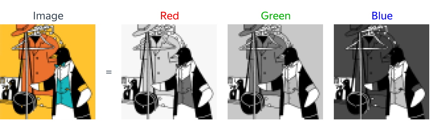
Each color intensity is represented as a value between 0 and 1. However, to optimize memory usage, images are typically stored in an 8-bit format, where values are uniformly discretized in the range 0 to 255.
- Black:
(0, 0, 0)— all color channels at minimum intensity. - White:
(255, 255, 255)— all color channels at maximum intensity. - Other colors: A mix of red, green, and blue intensities.
When displayed on a computer screen, images are structured as rows of pixels of the same width, rather than as a single flattened vector. Humans perceive images in this structured 2D format rather than as raw numerical sequences.
The width W represents the number of pixels per row, and the height H indicates the number of pixel rows.
This means that an image can be represented as a tensor of shape:
H × W × 3 (for color images, where each pixel has 3 color channels)
These images are typically stored in an unsigned 8-bit integer (uint8) format, which allows for efficient storage while preserving sufficient color depth.
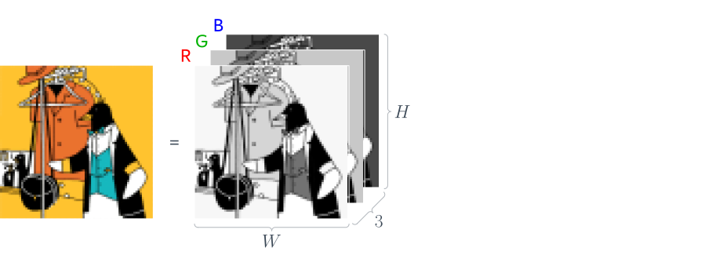
MLP for Image Classification
The simplest way to build a neural network for image classification is to flatten the image into a vector and use a standard multilayer perceptron (MLP) with cross-entropy as the loss function.
However, this approach has several drawbacks.
Drawback #1: Number of Parameters
In the first layer, the number of parameters is calculated as:
H × W × C × Cout
where Cout represents the number of neurons in the first layer.
- If
Coutis too small, important information may be lost, especially for high-resolution images (e.g.,1920 × 1080). - If
Coutis too large, the model will have an excessive number of parameters (and this is only the first layer), leading to overfitting, difficult optimization, and other related challenges.
Drawback #2: Lack of Structural Awareness
What do we mean by "structure"? Let's illustrate with an example using an image of a puppy:
If we shift the image a few pixels, we still recognize it as a puppy:
Similarly, scaling the image does not change our perception:
The same holds true if the image is rotated or flipped:
The challenge is that an MLP must learn on its own that its predictions should remain invariant to these transformations. In practice, this usually requires increasing the number of neurons in hidden layers (as suggested by the universal approximation theorem), which is already problematic due to the parameter explosion mentioned earlier.
To address these issues, we introduce a new building block—the convolution operation.
Convolutions
Let's try to solve at least one problem—invariance to translation. A puppy can appear anywhere in an image, and we cannot guarantee that our model has "learned" to detect puppies best in a specific part of the image. Therefore, for a more robust prediction, it makes sense to shift the image in all possible directions (filling empty areas with zeros):
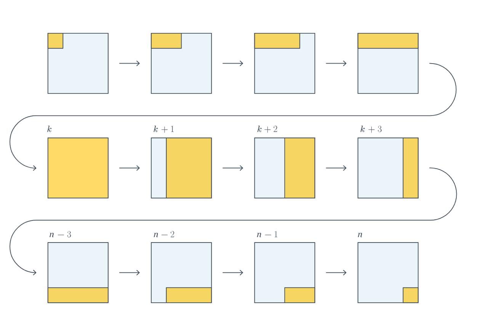
Then, for each shift, we predict the probability that a puppy is present in the image. The obtained predictions can be aggregated in various ways—using the mean, maximum, etc.
Another Perspective on This Operation
Let's look at this operation from a different angle. Consider an image that is three times larger than the original, where the puppy image is centered:
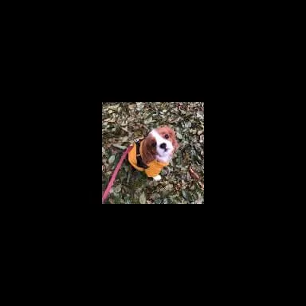
Now, let's take a window the same size as the original image and slide it across all possible positions within the enlarged image:
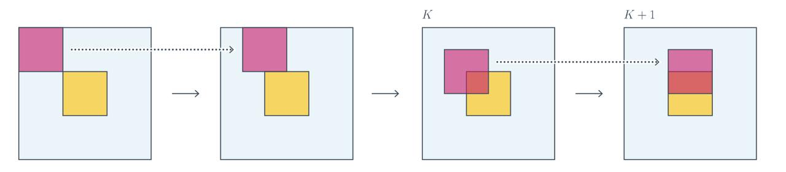
It is easy to see that this operation is equivalent to shifting the original image relative to the window.
Defining the Convolution Operation
Now, let’s consider the simplest model based on this principle—a kind of ensemble of linear models. We flatten each shifted image into a vector and take the dot product with a weight vector (for simplicity, the same weights for all shifts). This results in a linear operator, which has a special name: convolution.
Convolution is one of the most important components of convolutional neural networks (CNNs). The weights of the convolution, structured as a tensor (in this case, of shape H × W × 3), form its kernel.
The region of the image currently being processed is referred to as the convolution window.
Neural Networks for Sequential Data
In this section, we explore neural networks designed for processing data in the form of sequences of tokens. Such data can come from music, videos, time series, robot motion trajectories, or protein amino acid sequences. However, one of the richest sources of sequential data is Natural Language Processing (NLP).
As the name suggests, Natural Language Processing (NLP) is a branch of data science focused on analyzing texts written in human languages. NLP plays a role in many everyday applications, such as asking Siri or Alexa to play a song, using autocomplete in search engines, or checking spelling and grammar in documents.
- Document classification (by topic, category, genre, etc.).
- Spam detection.
- Part-of-speech tagging.
- Spellchecking and typo correction.
- Keyword extraction and synonym/antonym detection.
- Named entity recognition (detecting names, geographic locations, dates, phone numbers, addresses).
- Sentiment analysis (detecting emotional tone in text).
- Information retrieval and ranking relevant documents based on search queries.
- Summarization (automatic generation of concise text summaries).
- Machine translation (automated language translation).
- Dialogue systems and chatbots.
- Question-answering systems (choosing the correct answer or generating responses).
- Speech recognition (Automated Speech Recognition, ASR).
There are several ways neural networks process sequential data:
-
Many-to-one: A sequence of objects is input, and a single object is output.
Example: Text or video classification.
Example 2: Thematic classification—given a sentence of arbitrary length, generate a probability vector indicating the likelihood of predefined topics being present in the sentence. The output vector has a fixed dimension equal to the number of topics. -
One-to-many: A single object is input, and a sequence of objects is output.
Example: Generating a caption for an image (image captioning). -
Many-to-many: Both the input and output are sequences of variable length.
Examples: Machine translation, text summarization, generating article headlines. -
Synchronized many-to-many: Both input and output sequences have the same length, with explicit alignment between input and output tokens.
Examples: Generating frame-by-frame subtitles for videos, PoS-tagging (part-of-speech tagging—predicting the part of speech for each word in a sentence).
Word Embeddings
Before discussing the architectures commonly used for processing text, we need to understand how text data can be encoded. Since neural networks require numerical inputs, we must first convert text into a vectorized representation. There are two fundamental approaches to text vectorization:
- Vectorizing the entire text, transforming it into a single vector.
- Vectorizing individual structural units, converting the text into a sequence of vectors.
Early statistical approaches followed the first method, treating text as an unordered collection ("bag") of tokens, typically words. This means that sentences like "I don't like ML" and "I like don't ML" would receive identical vector representations, losing important structural information. Therefore, we will only briefly mention these approaches.
The most straightforward method is called Bag-of-Words (BoW). In this approach, a text is represented as a frequency vector of token occurrences, excluding predefined "stop-words" such as personal pronouns, articles, and other common words.
A slightly more advanced version is TF-IDF (Term Frequency-Inverse Document Frequency).
This method considers not only token frequency in a document but also its relevance across a collection of texts D.
The TF-IDF representation of a document d is the product:
TF(t, d) ⋅ IDF(t, D)
Let's break down each component:
-
Term Frequency (TF):
TF(t, d) = (n_t) / (Σ_k n_k),
wheren_tis the number of occurrences of tokentin documentd, and the denominator represents the total word count ind. This measures how frequently a token appears in a document. -
Inverse Document Frequency (IDF):
IDF(t, D) = log(|D| / |{d_i ∈ D | t ∈ d_i}|),
where|{d_i ∈ D | t ∈ d_i}|counts the number of documents in the collectionDthat contain tokent. This factor penalizes overly common words while assigning higher importance to rarer, more informative tokens.
Word Embeddings with Context
Let's now explore another approach—mapping words to vectors (embeddings).
Suppose that the same word is always represented by the same vector, regardless of its position or surrounding text. How can we encode the meaning of a word in its vector representation? The answer aligns with one of the core ideas of representation learning: use context.
Just as in foreign language learning, where unfamiliar words can be inferred from surrounding text, we can define word meaning by the words that frequently appear near it.
Word2vec: Learning Word Representations
One of the most famous implementations of this idea is Word2vec, introduced by T. Mikolov in 2013 in the paper Efficient Estimation of Word Representations in Vector Space.
The authors proposed two training strategies:
- CBOW (Continuous Bag-of-Words): The model learns to predict the central word based on its surrounding context (e.g., two words before and after the target word).
- Skip-gram: The model learns to predict the context words given a central word (e.g., the two neighboring words on each side).
The dimensionality of word embeddings is a hyperparameter and is selected empirically. The original paper suggests using an embedding size of 300. These learned representations preserve semantic relationships between words.
We won't go into detail about the inner workings of Word2vec and its modern variations here. For a deeper dive, we recommend the NLP course by Lena Voita.
Examples of Word Embeddings
Below are some examples of words and their top-10 nearest neighbors in the embedding space (trained on a dataset of Quora Questions using Word2vec):
- quantum: electrodynamics, computation, relativity, theory, equations, theoretical, particle, mathematical, mechanics, physics.
- personality: personalities, traits, character, persona, temperament, demeanor, narcissistic, trait, antisocial, charisma.
- triangle: triangles, equilateral, isosceles, rectangle, circle, choke (guess why?), quadrilateral, hypotenuse, bordered, polygon.
- art: arts, museum, paintings, painting, gallery, sculpture, photography, contemporary, exhibition, artist.
Recurrent Neural Networks
Now that we have represented text as a sequence of vectors corresponding to words or their fragments, how do we process it?
One possible approach is to treat a sequence of k vectors of dimension d as an "image" of size k×1 with d "channels,"
allowing us to use familiar convolutional neural networks (CNNs) with 1D convolutions instead of 2D.
In some cases, this method can work, but there are several issues to consider:
-
Although images can also vary in size, it is rare in datasets to find both
1920×1080and3×3images side by side. However, in a collection of restaurant reviews, we may encounter both novel-length critiques and short comments like "It's fine." While global pooling can help handle overly long sentences (with some information loss), very short sentences may cause problems, especially if we neglect proper padding. - A more philosophical observation: images are homogeneous, with no preferred direction. In contrast, text is written and read sequentially. It seems logical to leverage this structure: when processing a token, we should consider previous tokens as part of its context.
This last idea leads directly to the concept of Recurrent Neural Networks (RNNs):
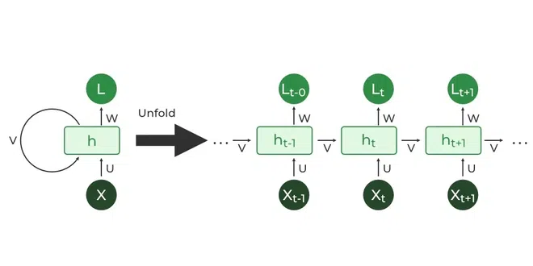
Understanding RNNs
To retain information from previous tokens, we introduce the concept of internal memory or hidden state (h_n).
In the simplest case, the hidden state is represented as a fixed-dimensional vector.
At each discrete time step, the network receives input data (e.g., a token embedding), updating its hidden state accordingly.
The update is performed as follows:
h_n = tanh(h_(n-1) W1 + x_n W2)
After updating the hidden state, the network predicts an output signal, for example:
y_n = h_n W3
Note that the weights W_i remain the same across all iterations.
You can think of this as repeatedly feeding each new x_n and h_(n-1) into the same layer, which loops back onto itself.
A recurrent network can be trained by minimizing the total error across all predicted outputs y_n of the network.
It is easy to imagine a neural network with multiple recurrent layers: the first RNN layer processes the original sequence, the second RNN receives the outputs of the first network, the third RNN processes the outputs of the second, and so on. Such architectures are called deep recurrent neural networks (deep RNNs).
Sequence-to-Sequence (Seq2Seq) Models
You may have noticed that so far, we haven't discussed tasks related to generating sequences.
Indeed, the models we have covered so far do not allow generating sequences of arbitrary length. But how can we translate from one language to another? We do not know the exact length of the translated phrase in advance, and there is usually no one-to-one word correspondence between the original sentence and its translation.
A natural solution to the sequence-to-sequence (seq2seq) problem is to use an encoder-decoder architecture. This consists of:
- Encoder: Processes the input sequence and encodes its information into a context vector.
- Decoder: Generates a new sequence based on the encoded representation.
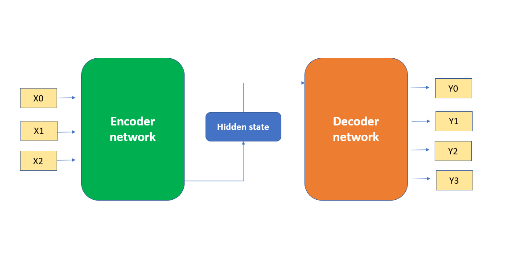
The encoder extracts meaningful features from the input and compresses them into a fixed-length representation, while the decoder learns to expand this representation into an output sequence. This approach is widely used in tasks such as machine translation, text summarization, and chatbot responses.
The encoder reads the input sentence token by token and processes them using recurrent network blocks. The hidden state of the final block becomes the context vector. Often, the encoder reads the sentence in reverse order—this ensures that the last token the encoder sees closely aligns with the first tokens the decoder will generate. This makes it easier for the decoder to begin reconstructing the sentence, as having a few correct initial tokens significantly simplifies further generation.
The decoder has an architecture similar to the encoder.
However, each decoder block must take into account both the tokens generated so far and the information about the original sentence.
The hidden state vector of the initial decoder block (g_0) is initialized using the context vector.
Thus, the decoder receives a compressed representation of the input sentence. The sentence is generated as follows:
-
The first decoder block receives a start-of-sequence token (e.g.,
<BOS>, begin of sentence). - The output of the first block is the first token of the new sequence.
- This predicted token is then fed into the next decoder block as input.
-
The process repeats until either:
- The model generates an end-of-sequence token (e.g.,
<EOS>, end of sentence). - The sequence reaches a predefined maximum length.
- The model generates an end-of-sequence token (e.g.,
In this way, the decoder functions as a language model, generating the sentence token by token while considering the previous context.
Naturally, the encoder can be made more sophisticated. For instance, we can use a multi-layer bidirectional network, as long as its output remains a single context vector.
The decoder, however, is more constrained—it must generate words one by one in a single direction.
The Attention Mechanism
How does a human translate sentences from one language to another? Typically, a translator focuses on the word they are currently writing. We want neural networks to incorporate a similar intuition. Let's explore how this can be implemented in machine translation.
In a standard seq2seq model for machine translation, all information about the input sentence is compressed into a context vector. However, different words in the sentence carry different levels of importance and should be weighted accordingly. Moreover, when generating different parts of the translation, the model should focus on different parts of the input sentence.
For instance, the first word in a translated phrase is often related to the first words of the input sentence. Sometimes, a single word in the translation conveys the meaning of multiple words scattered throughout the original text (anyone familiar with German separable verbs?).
How Attention Works
The attention mechanism implements this idea by providing the decoder with access to all tokens of the input sentence at each generation step. Let’s examine the classic attention model introduced by Bahdanau et al., 2014.
Let (h_0, h_1, ..., h_n) represent the encoder's hidden states and
(s_0, s_1, ..., s_m) be the decoder's hidden states.
Note that h_n = s_0, which is the context vector.
At each step i in the decoder, we compute attention scores by multiplying
s_i with the hidden states (h_0, h_1, ..., h_n) of the encoder:
e_i = [⟨s_i, h_0⟩, ⟨s_i, h_1⟩, ..., ⟨s_i, h_n⟩] = [s_i h_0^T, ..., s_i h_n^T]
These n values indicate how important each input token (0...n)
is for generating the i-th token in the translation.
We then convert these attention scores into a probability distribution using softmax:
α_i = softmax(e_i)
These α_i values are used as weights to compute the final attention vector:
a_i = ∑ (α_j * h_j) for j=0 to n
Instead of just using the decoder’s hidden state s_i at step i,
we now use the concatenation of [s_i, a_i].
This means that at every step, the decoder has weighted access to all tokens of the input sentence.
A key property of attention is that its weights capture relationships between words in different languages during translation. This makes it possible to analyze and visualize which parts of the input contribute most to each output token.
Self-Attention
In the previous section, we discussed the application of the attention mechanism in the decoder, but it turns out that it can also be useful for the encoder.
The self-attention mechanism is used to look at other words in the input sequence while encoding a specific word. This mechanism was initially introduced in the paper "Attention Is All You Need" as a core component of the Transformer architecture.
The effectiveness of transformers was demonstrated in the task of machine translation. Today, transformers and self-attention have gained enormous popularity and are used not only in NLP but also in other domains, such as computer vision (Vision Transformer, Video Transformer, Multimodal Transformer for Video Retrieval, etc.).
Let's focus on the self-attention mechanism. Suppose we have the following two sentences:
"Mom washed the window. She held a cloth in her hands."
Does the pronoun "She" refer to the mother or the window? For a human, this is a very simple question, but for a machine learning model, it is not. Self-attention helps the model learn the relationships between tokens in a sequence, modeling the "meaning" of other relevant words when processing the current token.
What happens inside the self-attention module? First, three vectors are formed from the input vector (for example, the embedding of each token):
- Query (Q): Represents the token that is searching for related information.
- Key (K): Represents the tokens that may provide relevant information.
- Value (V): Contains the actual information of the tokens.
These vectors are obtained by multiplying the input vector by the matrices
W_Q, W_K, and W_V,
whose weights are learned along with all other parameters of the model using backpropagation.
The purpose of these three abstractions is to separate the embeddings that define the "direction" of attention (query, key) and the actual meaning of the token (value). The query vector defines the starting point of the self-attention mechanism (from which token attention is directed), while the key vector defines the target token (to which the attention is directed). Thus, the same token can act as both a starting and an ending point in the attention mechanism: self-attention is calculated between all tokens in the selected fragment of text.
The process occurs as follows:
- Each token is sequentially fixed as the query.
- The query vector of the current token is dot-multiplied with the key vectors of all tokens in the sequence.
- The resulting values indicate how relevant each token is for encoding the current query token.
- These values are normalized using softmax to obtain a probability distribution.
- A weighted sum of the value vectors is computed, where the weights come from the softmax probabilities.
- The final output is the attention-weighted representation for the given token.
The calculated numbers indicate how important other tokens are for encoding the query token in a specific position.
The obtained values are then normalized and passed through softmax to create a probability distribution. Then, a weighted sum of the value vectors is computed, where the weights are the probabilities obtained in the previous step. The resulting vector is the output of the self-attention layer for a single token.
In practice, self-attention is not computed separately for each token. Instead, matrix computations are used. For example, instead of calculating query, key, and value vectors for each token individually, we stack the embeddings of input tokens into a matrix X and compute the matrices:
- Q = WQ * X
- K = WK * X
- V = WV * X
Then, the same steps described in the previous section are performed, but for matrices. We compute the final matrix Z using the formula:
Z = softmax(QKT / norm_const) * V
In the original paper Vaswani et al., 2017, the normalization constant was chosen as 8 (the square root of the key vector dimension). This normalization led to more stable gradients during training.
Interestingly, self-attention is typically computed in parallel across multiple attention blocks. This scheme is called multi-head self-attention. Self-attention is computed multiple times with different weight matrices, and the resulting matrices are concatenated and multiplied by an additional weight matrix WO.
This allows different self-attention heads to focus on different types of relationships. For example:
- One head may capture feature representations.
- Another head may focus on actions.
- A third head may identify object-subject relationships.
Since different heads can be computed in parallel, the input embedding matrix is mapped into different subspaces of representation. This significantly enhances the self-attention mechanism's ability to model relationships between words.
The multi-head self-attention computation can be represented as:
MultiHead(Q, K, V) = Concat(head1, head2, ..., headn) * WO
Where:
headi(Q, K, V) = softmax(QKT / norm_const) * V
There are many implementations of self-attention, including:
- PyTorch MultiheadAttention
- TensorFlow Implementation
- A Jupyter notebook from the Harvard NLP group explaining the Transformer architecture in detail.
- An excellent visual explanation in the article "Illustrated Transformer" by Jay Alammar.
Working with Text Data
Text Preprocessing
Before applying the architectures described above (or even simple approaches like TF-IDF or word2vec), it is essential to understand how to preprocess text data effectively.
The first step in text processing is representing coherent text as a sequence of tokens. Initially, it makes sense to split the text into sentences, followed by breaking it down into words or character-based n-grams. This process is called tokenization. Tokenization can be performed manually using regular expressions or by utilizing built-in methods from libraries like NLTK.
Lemmatization
Once we obtain an ordered list of words in the text, the next step is to normalize different grammatical forms of the same word. This can be achieved using lemmatization. Lemmatization is an algorithm that converts words into their base (dictionary) form by applying morphological analysis and knowledge of language-specific rules.
Example of Lemmatization:
"dogs, dog, with a dog, by dogs → dog"
Stemming
Another way to reduce word forms to a common root is stemming. Stemming is a more heuristic-based process that operates without contextual knowledge, dictionaries, or morphological rules. Unlike lemmatization, stemming does not recognize that words with alternating letters share the same root (unless explicitly programmed) or that words like "is", "will be", and "was" are different forms of the verb "to be".
While stemming is a less precise method compared to lemmatization, it is significantly faster, making it useful in applications where speed is a priority.
Stopword Removal
Another crucial step in text preprocessing is the removal of stopwords. Stopwords include interjections, conjunctions, prepositions, articles, and other words that may introduce noise into machine learning models. In some cases, generic vocabulary words are also removed, leaving only domain-specific terms.
There is no universal list of stopwords, but a good starting point is the built-in stopword list available in the NLTK library.
Text Data Augmentation
Data augmentation is often used to increase the amount of training data and improve the generalization ability of models. While data augmentation in computer vision is relatively straightforward and can be performed on-the-fly (scaling, cropping, rotation, noise addition, etc.), text augmentation is more complex due to grammar, syntax, and language-specific nuances.
Text augmentation is less "automatic" compared to image augmentation. Ideally, a proper augmentation method should preserve the meaning of the sentence while rephrasing it naturally. Below are some popular techniques for augmenting text data:
- Back translation: Translate the original text into another language and then translate it back. This helps retain context while generating a synonymous version of the phrase.
- Synonym replacement: Replace a word with a synonym or a semantically similar word. This can be done using synonym dictionaries or by searching for similar words in an embedding space (e.g., word2vec, fastText, or contextualized embeddings from pre-trained models like BERT, ELMo, GPT-2/GPT-3).
- Synonym insertion: Randomly insert a synonym of a word somewhere in the sentence.
- Abbreviation expansion and contraction: Replace an abbreviation with its full form and vice versa.
- Random word operations: Randomly insert, delete, replace, or shuffle words within a sentence.
- Sentence shuffling: Randomly change the order of sentences in a paragraph.
- Character-level modifications: Randomly replace letters with nearby keyboard characters, introduce spelling or punctuation errors, or change the letter case.
- MixUp for text: In classification tasks, combine the feature representations of two objects and mix their class labels with the same weights
to create a new object with features
x_ijand a class labely_ij:
x_ij = λ * x_i + (1−λ) * x_j
y_ij = λ * y_i + (1−λ) * y_j
For text, feature representations can be mixed at the word level (choosing the nearest word in the word embeddings space) or at the sentence level. Another approach is to sample words from two different texts with probabilitiesλand1−λ. - Syntax tree-based augmentation: Use a syntactic parse tree to generate augmented variations of a sentence.
- Text generation with language models: Generate new text using pre-trained language models like GPT-3.
For more details on some of these text augmentation techniques, check out the Easy Data Augmentation (EDA) paper. Many of the methods mentioned above and in the paper are implemented in the NLPAug library, which simplifies text augmentation in practical applications.
Transformers
No discussion of modern neural networks would be complete without mentioning transformer models. In fact, almost all groundbreaking achievements in deep learning in recent years rely on this architecture. But what makes it so special, and why are transformers successfully applied to such a wide range of tasks?
Let's find out.
Why Do We Need Attention?
First, let's recall that before 2017 (when the original paper introducing the transformer architecture was published), the primary approach for handling sequences was using recurrent neural networks (RNNs). However, this approach has several well-known limitations:
- Memory bottleneck: RNNs store all information about the sequence in a hidden state, which is updated at each step. If the model needs to "remember" something that happened hundreds of steps earlier, this information must be retained in the hidden state without being replaced by new data. This means either having an extremely large hidden state or accepting inevitable information loss.
-
Sequential processing: Training recurrent networks is difficult to parallelize.
To compute the hidden state of the RNN layer at step
i+1, you must first compute the state for stepi. Thus, processing a batch of sequences with a length of 1000 requires 1000 sequential operations, making training time-consuming and inefficient on GPUs, which are optimized for parallel computations.
These issues make it challenging to apply RNNs to truly long sequences: even if you wait for training to finish, your model, by design, will inevitably lose information from the beginning of the text. Ideally, we want a way to "read" a sequence such that at any moment, the model can refer to any previous point in constant time, without losing information.
This is exactly what the self-attention mechanism at the core of transformers enables. As we will see later, thanks to its scalability and versatility, this mechanism has proven effective not only for natural language processing but also in many other domains.
Below is the architecture of the transformer model, as presented in the original paper:
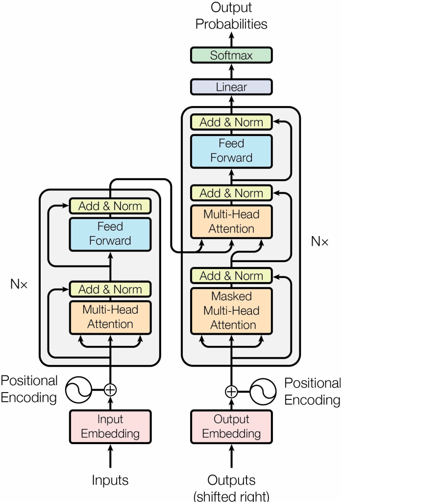
Transformer Encoder and Decoder
On the left side of the diagram, we see the structure of the encoder. It sequentially applies N blocks to the input sequence:
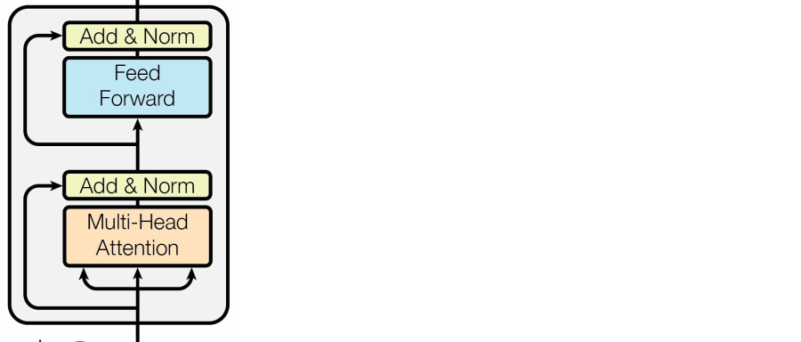
Each block outputs a sequence of the same length. It contains two key layers: multi-head attention and feed-forward. After each of these layers, the input is added back to the output (this standard approach is called a residual connection), and then the activations pass through a layer normalization layer. This part is labeled as "Add & Norm" in the diagram.
The decoder follows a similar structure, but each of its N blocks contains
two multi-head attention layers, one of which incorporates the encoder's outputs.
Now, let's take a closer look at each of the key components of this mechanism.
Attention Layer
The first part of the Transformer block is the self-attention layer. Unlike standard attention mechanisms, its output consists of new representations for elements from the same input sequence, where each element directly interacts with every other element.
More specifically, the computation of attention for a sequence involves three trainable
matrices: WQ, WK, WV. Each input element representation
xi is multiplied by these matrices, producing row vectors
qi, ki, vi (where i is the index of
the element). These vectors are referred to as query, key, and value, respectively.
Their roles can be loosely described as follows:
- qi — the query to a database.
- ki — the keys of stored values in the database, used for lookup.
- vi — the actual stored values.
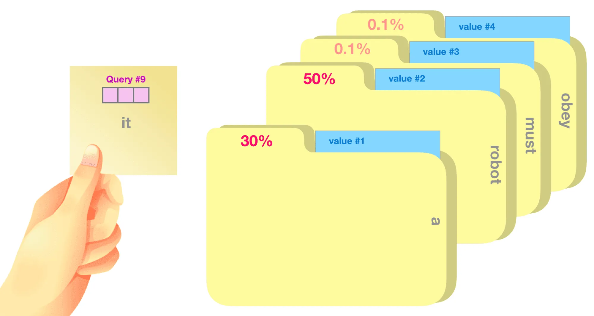
The closeness of a query to a key can be determined using a dot product:
self-attention weightsi = softmax(C ⟨qi, k1⟩, C ⟨qi, k2⟩, …),
where C is a normalization constant. In the original paper, the normalization constant was chosen as the square root of the key and value dimension √dk.
Now, we sum the values vi with the obtained coefficients. This is the output of the self-attention layer. In matrix form, it can be written as:
self-attention(Q, K, V) = softmax (QKT / √dk) V,
where Q, K, V are matrices of queries, keys, and values, respectively, with qi, ki, vi stored as row vectors, and softmax is applied row-wise.
Attention Layer in the Decoder
As mentioned earlier, one of the attention layers in the decoder is a cross-attention layer, where the queries are taken from the output sequence, while the keys and values come from the input (i.e., from the encoder's outputs).
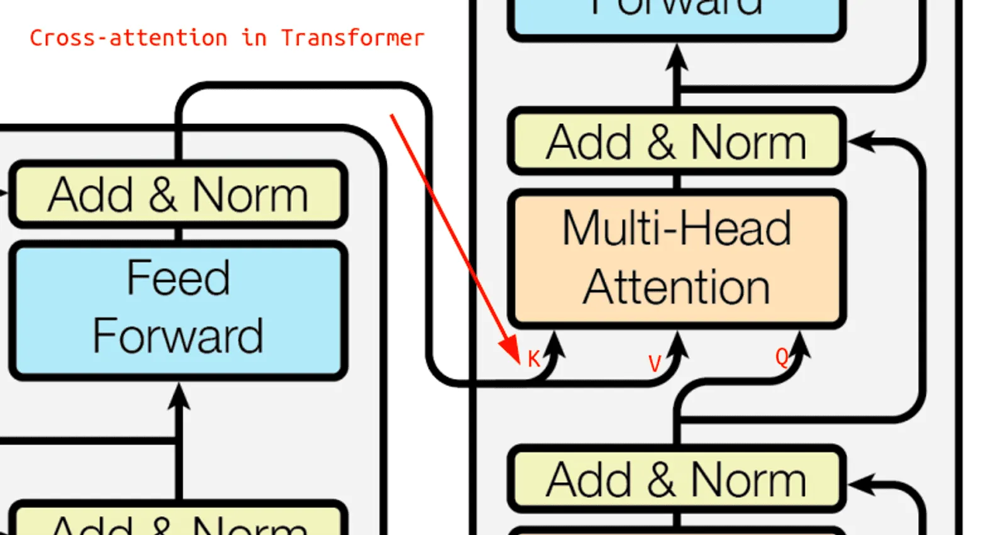
Another key feature of the decoder's attention is that, in the form described above, each token would have access to the entire sequence, which is undesirable for the decoder. Indeed, during generation, we produce tokens one step at a time, and having access to future tokens during training would lead to information leakage and poor model performance.
To prevent this issue, an autoregressive mask is applied to attention during training,
manually setting weights for future tokens to -∞ before the softmax operation,
ensuring their probabilities become zero after softmax. As shown in the image below, this
mask has a lower triangular shape.
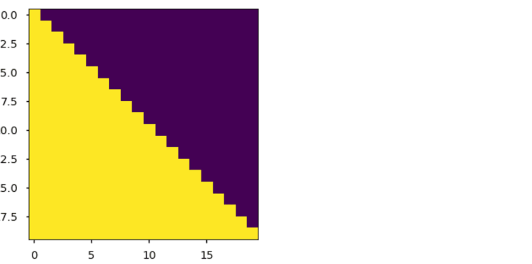
Multi-Head Attention
A single set of matrices Q, K, and V can capture only one type of dependencies between tokens, and these matrices extract only a limited range of information from the input representations. To address this limitation, the authors of the Transformer architecture introduced the concept of multi-head attention.
Instead of using a single attention mechanism, multiple parallel attention layers (or "heads") with different learned weights are applied simultaneously. The results from all heads are then concatenated and passed through a linear transformation. This allows the model to attend to different parts of the input sequence and capture multiple relationships in parallel.
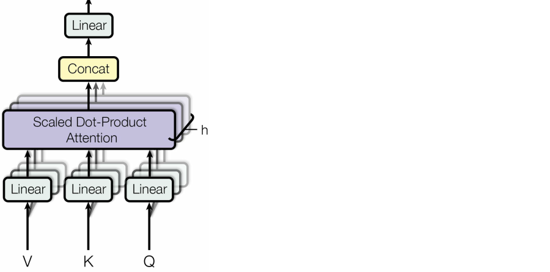
Efficiency
The approach of processing entire sequences using attention eliminates the concept of a hidden state that updates recurrently. Instead, each token can directly "read" any part of the sequence that is most useful for prediction. In particular, the absence of recurrence allows us to apply the layer to the entire sequence simultaneously, leveraging matrix multiplications that parallelize efficiently.
However, we must consider memory and time complexity costs: since each element in the sequence interacts with every other element, it is easy to show that the computational complexity of self-attention is O(n^2) with respect to sequence length. Additionally, naive implementations that construct a full attention matrix also require O(n^2) memory.
Optimizing the computational efficiency of attention has led to numerous research efforts, both engineering-focused and architectural. Some approaches reduce self-attention runtime to linear complexity or significantly improve memory efficiency by leveraging GPU memory hierarchy.
For example, the graphs below compare the runtime and memory consumption of a standard transformer with the mechanism introduced in Longformer:
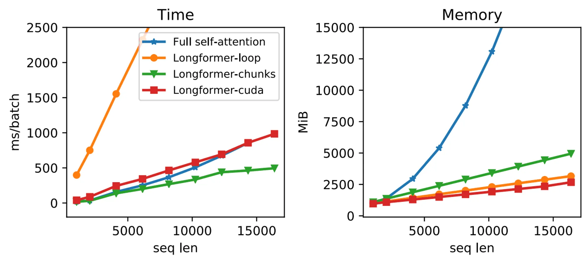
Fully Connected Layer and Normalization
The second component of the transformer block is the feed-forward network (FFN), which consists of two fully connected layers applied independently to each element of the input sequence. In modern architectures, the size of the intermediate representation (i.e., the output of the first layer) is often significantly larger—typically four times the output size of the block.
Because of this, the computational cost of FFN should not be underestimated: despite the quadratic complexity of self-attention, in large models or for short sequences, the FFN can take significantly more time than self-attention. Mathematically, the FFN is represented as:
FFN(x) = act(xW_1 + b_1)W_2 + b_2
The activation function act in the FFN has varied over time. Initially, ReLU was widely used, but the community later adopted GELU (Gaussian Error Linear Unit), which follows the formula:
GELU(x) = x \cdot \Phi(x)
where \Phi is the cumulative distribution function of the standard normal distribution.
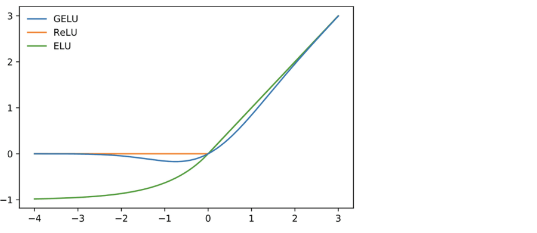
Let's say a few words about layer normalization: as demonstrated in several research papers, its placement within the residual connection is crucial. The standard transformer architecture employs the PostLN formulation, where normalization is applied after the residual connection.
However, this approach can be quite unstable when training deep models with a large number of layers. Instead, an alternative approach, PreLN (shown on the right in the image below), applies normalization to the input of the residual connection.
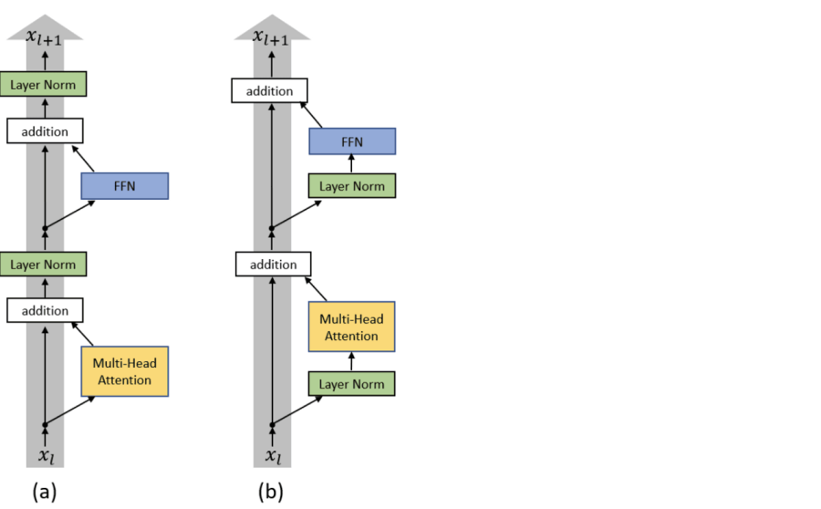
BERT and GPT
Transformer-based models wouldn’t be as interesting if almost all modern NLP tasks weren’t being solved using this architecture. The rapid rise in popularity of self-attention was driven by two well-known model families: BERT and GPT. These can be seen as the encoder and decoder of the Transformer, which later evolved into independent architectures.
Chronologically, GPT (Generative Pretrained Transformer) was introduced first. It is a standard language model implemented as a stack of Transformer decoder layers.
The training objective is simply next-token prediction, meaning it performs multi-class classification over a vocabulary at each step. A key feature of GPT is the use of a lower-triangular attention mask: without it, future tokens would be visible to past ones, causing a data leakage issue.
The trained model can be used for text generation and tasks that rely on it. Even ChatGPT, which is fine-tuned with special instruction-based training, differs only slightly from the base GPT model.
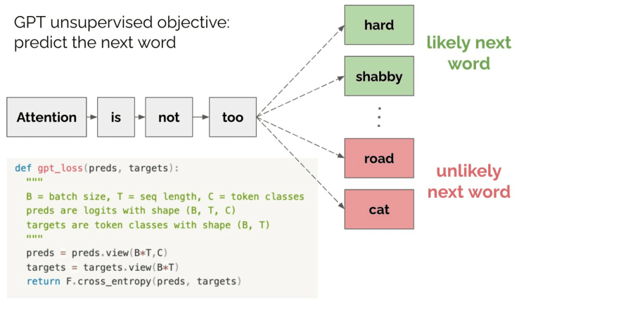
As the name suggests, the Bidirectional Encoder Representations from Transformers (BERT) model differs from GPT in its bidirectional attention: this means that while processing the input sequence, all tokens can leverage information from each other.
This makes BERT particularly suitable for tasks where predictions need to be made based on the entire input without text generation. Examples include sentence classification and document similarity search. However, BERT does not generate text from scratch.
Instead, BERT is trained with two key objectives:
- Masked Language Modeling (MLM): Predicting randomly masked words based on their surrounding context (illustrated in the image below).
- Next Sentence Prediction (NSP): Determining whether two text fragments logically follow each other.
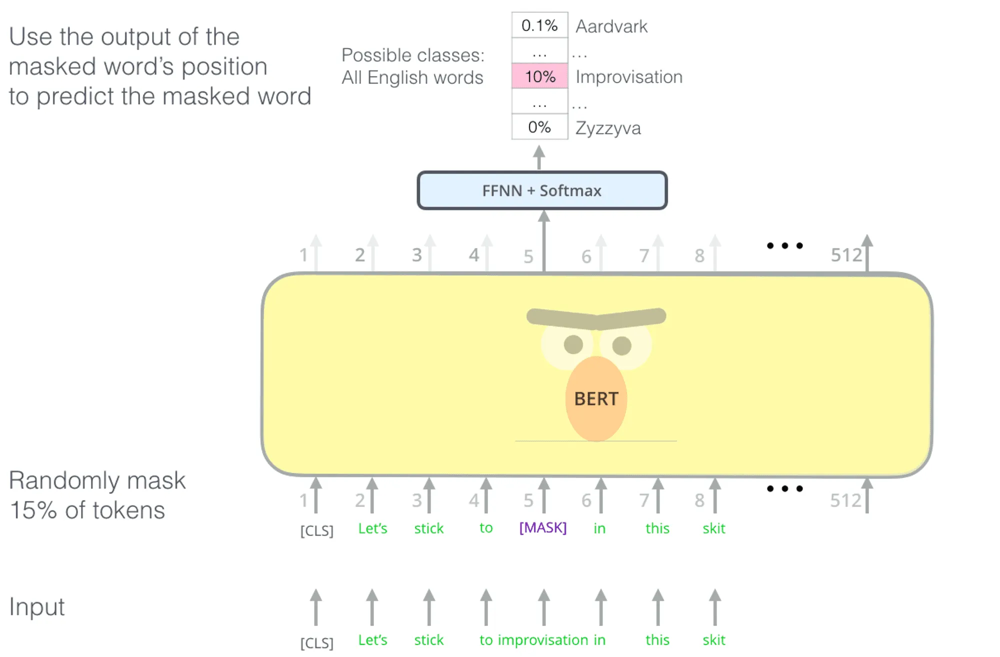
The key difference between BERT and GPT models is not just in their training objectives or applications but primarily in the type of attention mechanisms they use. This distinction is illustrated in the image below.
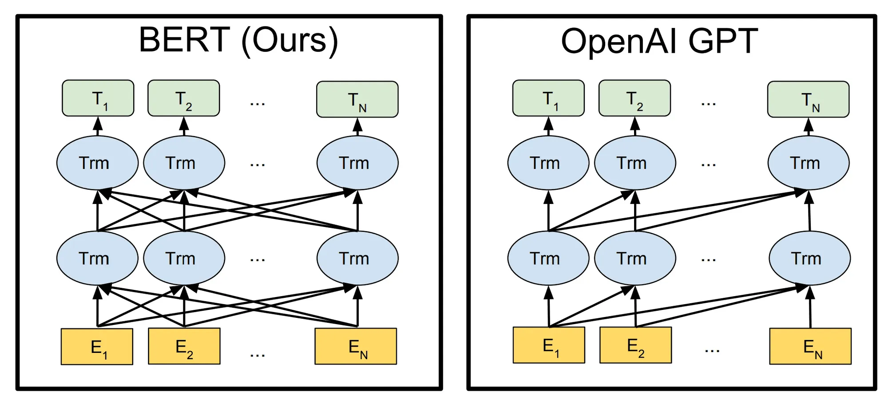
Training Nuances
Unfortunately, if you simply implement a Transformer neural network and attempt to train it using conventional hyperparameters from other architectures, you are highly likely to encounter failure. The optimization process for such models often requires adjustments, and neglecting these details can result in significant quality degradation or even unstable training.
One critical factor is the batch size. Almost all modern Transformer models are trained on extremely large batches, sometimes reaching millions of tokens in the largest language models. Since no modern GPU can handle such large batches in a single step, techniques like gradient accumulation are commonly used to accumulate gradients over micro-batches before performing an update.
Recent research also suggests increasing the batch size dynamically during training. The idea is that during early training stages, making more frequent gradient descent steps is crucial, while in later stages, it is more important to have an accurate gradient estimation.
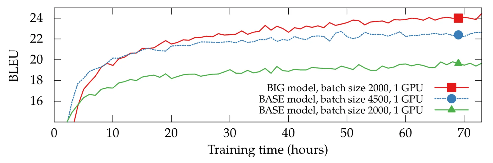
Another crucial factor is the choice of optimizer and learning rate schedule. Training a Transformer with standard SGD is highly unlikely to succeed. In the original Transformer paper, the Adam optimizer was used, and to this day, it remains the standard choice.
However, for large batch sizes, Adam sometimes struggles, leading researchers to use alternatives such as LAMB, which normalizes weight updates for each layer to stabilize training.
Transformers Beyond Text
Naturally, the remarkable success of this family of architectures in various text-related tasks did not go unnoticed by researchers in other domains. One of the most prominent areas where Transformer-based models have found new applications is undoubtedly computer vision.
For example, the ViT (Vision Transformer) architecture once broke classification accuracy records on image datasets by leveraging the self-attention mechanism for images divided into multiple patches—square-shaped segments.
As the authors of the paper explain, the idea of using Transformer architecture in vision emerged after observing the success of such models in NLP. The use of a general approach like self-attention allows architectures to bypass the need for explicitly encoding task-specific properties (also known as inductive bias), provided there is sufficient training time, a large number of parameters, and an extensive dataset.
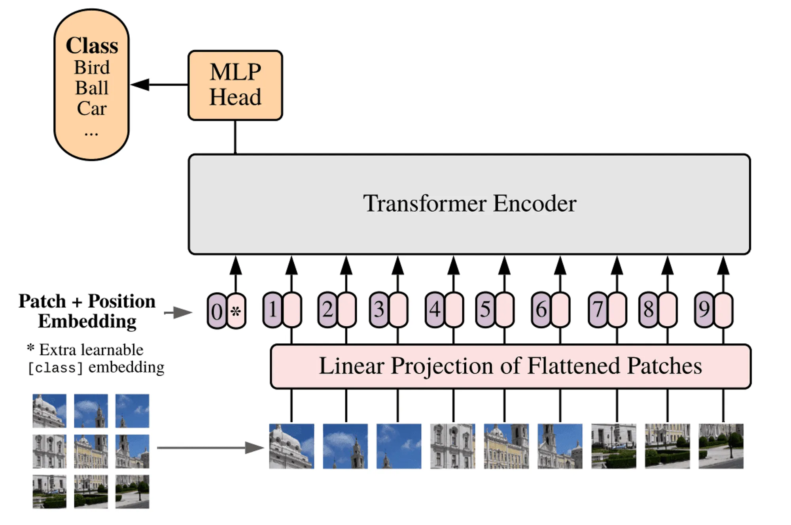
Transformers in Image Generation and Reinforcement Learning
Transformers also serve as the foundation for the generative component of DALL-E— a model that sparked a wave of research in text-to-image generation in recent years. Conceptually, DALL-E is quite simple: it can be viewed as an autoregressive "language model" that generates an image one "visual token" at a time.
Transformers are also applied in reinforcement learning. A notable example is the Decision Transformer paper, which proposes using autoregressive modeling with this architecture to construct an agent.
The authors demonstrated that the same approach used for text generation can be applied to predicting actions in a dynamic environment. As shown in the image below, the model sequentially receives standard triplets of encoded states, current actions, and rewards, and at each step, it outputs the next action.
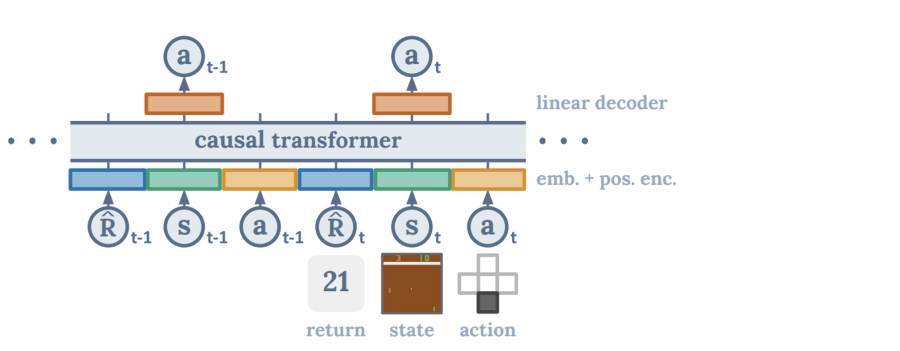
Exploring NanoGPT for Text Generation
In this section, you'll get hands-on experience running the LLM models you've been learning about. For this task, we'll use a custom, lightweight local LLM model that's small enough to run on a personal laptop (though you're welcome to try out larger models if you have the hardware!). This approach gives you a clearer understanding of how models like ChatGPT generate answers and highlights the significant computing cost associated with running them.
You've been approached by a group of colleagues in your AI research group who are investigating the performance and practicality of locally run GPT models. They're specifically interested in models that are fully transparent and understandable from a code perspective. To help with this, they've recommended using the NanoGPT repository by Andrej Karpathy, which is a small but complete GPT implementation, written from scratch. Your mission is to explore this model by running it locally on your machine and experimenting with it to better understand its capabilities.
- Clone the NanoGPT Repository: Follow the instructions on the NanoGPT GitHub repository to clone the code to your local machine.
- Run the Pre-trained Model: The repository comes with a small pre-trained GPT model on a Shakespearean dataset.
- Your task is to generate text samples using this pre-trained model. You can do this by running the provided script that generates text from the Shakespeare model.
Submission:
Share the generated text output from your run (minimum 100 characters).
Tips:
- Make sure you have all necessary dependencies installed, such as Python and PyTorch, as described in the repo.
- Fine-tuning might take time, so choose your dataset wisely for faster experimentation.
- Feel free to adjust the parameters during fine-tuning to see how the model's performance changes.
In the previous exercise you were introduced to NanoGPT and got a chance to get familiar with it. In this exercise, you will fine-tune the NanoGPT model with your own data.
- Prepare Your Own Text: Select a text dataset of your choice. It can be a personal collection of articles, blog posts, stories, or any form of coherent text (minimum 1,000 words).
- Fine-Tune the NanoGPT Model: Follow the instructions in the repository to fine-tune the GPT model using your own dataset. Adjust the hyperparameters, if necessary, to ensure that the model learns effectively from your data.
- Generate New Text with a Prompt: Once the model is fine-tuned, generate new text by providing a custom prompt related to your dataset.
Submission:
Submit the prompt you used and the new text generated by your fine-tuned model
(minimum 100 characters).
Tips:
- Make sure you have all necessary dependencies installed, such as Python and PyTorch, as described in the repo.
- Fine-tuning might take time, so choose your dataset wisely for faster experimentation.
- Feel free to adjust the parameters during fine-tuning to see how the model's performance changes.
Introduction to Generative Modeling
Up until now, you have studied machine learning models that primarily predict certain characteristics of objects, such as class labels or regression targets. These types of tasks are referred to as discriminative modeling.
However, there are also inverse problems where an object needs to be created based on certain characteristics or the probability distribution of objects needs to be estimated. This is known as generative modeling—the key aspects of which we will explore in this section.
Training generative models is significantly more challenging than training discriminative models. The latter operate with much simpler distributions. For instance, predicting the probability of a specific digit appearing in an image is much easier than generating an image with the desired digit. Despite these challenges, generative models have achieved remarkable success in recent years, enabling the creation of images that are nearly indistinguishable from real photographs.
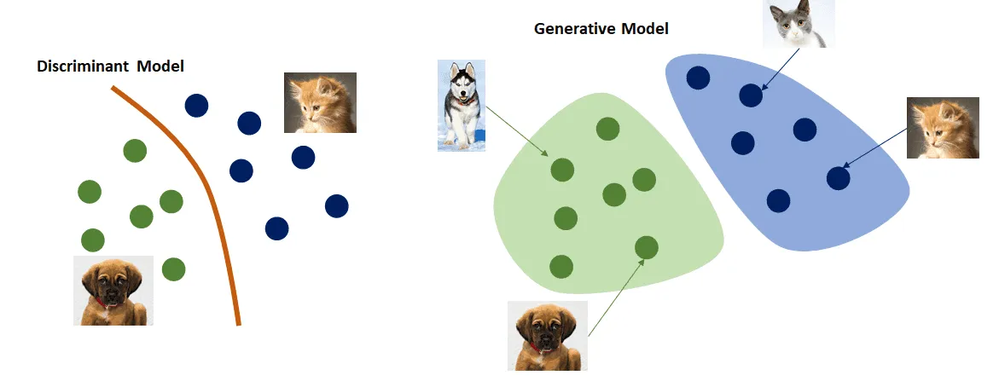
Generative models help solve a variety of tasks, which we will explore further. The most fundamental task is approximating the data distribution and generating new data.
Suppose we have a dataset of handwritten digit images. We assume that this dataset is sampled from a larger population (i.e., the entire set of possible images). Our goal is to model the distribution of this population in some way.
We can achieve this using two approaches:
-
Explicit modeling: In this case, we construct and estimate the probability
density function
p(x). From this distribution, we can sample new objects. Examples of such models include:- Autoregressive models (e.g., PixelCNN++, Video Transformer)
- Diffusion models
- Models based on normalizing flows
- Variational autoencoders
- Implicit modeling: In this approach, we do not directly estimate the probability density function, but we can still sample new objects from the learned distribution. In our example of handwritten digits, we would be able to generate similar images. A notable example of such models is Generative Adversarial Networks (GANs).
Discriminative vs. Generative Models
Let's formalize the difference between discriminative and generative tasks. In discriminative
modeling, given an object x and a label y, we typically want to
estimate the conditional probability p(y|x).
In generative modeling, the goal is the opposite: to recover the probability
p(x) or p(x|y). Here, y can represent either a class
label or another object. For example, if we aim to generate images based on a textual
description, the images would be x, and the text would be y.
Interpolations in Latent Space
Most generative models allow sampling of new objects. Typically, after training a generative model, we obtain a generator—a function that outputs an object.
In models such as Generative Adversarial Networks (GANs), diffusion models, and variational autoencoders (VAEs), the generator takes a vector of random values from a simple probability distribution (e.g., normal or uniform) as input. This can be expressed as:
x = G(z)
where x is the generated object, G is the generator function, and
z is the vector of random values. The space in which z exists is
called the latent space.
The distribution of z is usually predefined before model training and remains
unchanged during the process. Since we know the distribution, we can sample as many different
z values as needed.
Consider two vectors z₁ and z₂ from the latent space and their
corresponding generated objects:
x₁ = G(z₁), x₂ = G(z₂)
Since z₁ and z₂ are two points in the latent space, we can draw a
line between them. The points on this line also belong to the latent space. If we move along
this line and use these intermediate points as input to the generator, we obtain a smoothly
transitioning generated object.
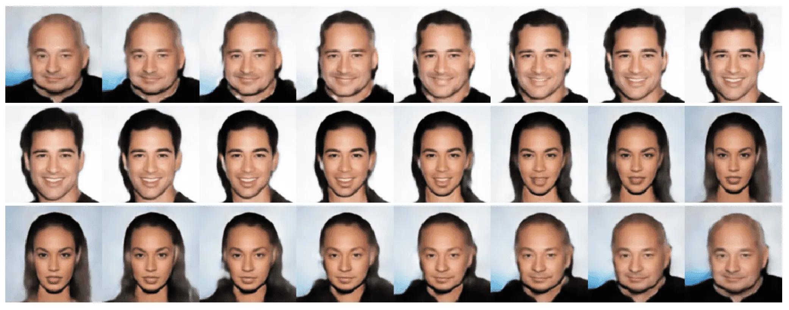
In the example above, we considered movement along a straight line, but in practice, interpolation can follow a more complex trajectory.
Manipulations in the latent space allow not only for smooth transitions between objects but also for editing generated objects. Typically, in such cases, it is necessary to identify directions in the latent space that correspond to specific attributes of the generated objects.
For example, one could find a direction responsible for hair color or smiling expressions in human face generation. We will explore these methods in more detail in the sections dedicated to specific models.
Applications of Generative Models
Why would one need to generate new data or estimate its density? The simplest example is data augmentation, which helps prevent overfitting and improves the generalization ability of a model.
Simple data augmentations such as random shifts, rotations, scaling, color, and contrast adjustments are widely used in almost all machine learning methods. However, generative models provide a more advanced form of data augmentation that can significantly expand a dataset or enrich it with completely new elements.
For instance, a generative model that applies style transfer—transferring the style of one image onto another—can be used to train more robust classification models. In a study by Sandfort et al., generative neural networks were used for data augmentation to improve the quality of segmentation in CT scans.
Additionally, generative models are widely applied in various image editing tasks. They are used to enhance image resolution, a problem known as super-resolution.
In the image below, the original picture (original) was first reduced in size by a factor of four and then restored to its original dimensions using different methods. It is evident that SRGAN—a method based on Generative Adversarial Networks (GANs)—performs significantly better than the traditional bicubic interpolation method, which often results in a blurry image.
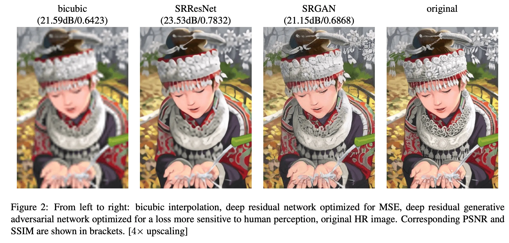
Generative models can be used to fill in missing parts of images. This is particularly useful when we want to remove unwanted objects or people from a photo and need to seamlessly fill the empty spaces left after their removal. This feature is already available in some modern smartphones.
In recent years, models that generate images based on textual descriptions have significantly improved. Some of the most well-known models include:
- Stable Diffusion – Open-source model. GitHub
- DALLE 2 – Available via a paid API. More Info
- Midjourney – Available via Discord. Official Site
- Imagen – A text-to-image model by Google AI. More Info
There are now dedicated databases for AI-generated images: Lexica and Openart.
The availability of such models has led to numerous applications, including:
- Illustrations for books – Example on Reddit
- Logo creation – Case study using DALL·E 2
- Interior design – AI-generated room designs
- Tattoo generation – AI-powered tattoo designs
Additionally, some models allow combining multiple tasks, such as inpainting based on text descriptions. For example, removing an object from an image and instructing the model on what should be drawn in its place.
Based on this technology, several image editors with built-in generative models have emerged:
- Neural Love – AI-enhanced image editing
- Photoroom – Background remover and AI editor
- ZMO – AI image generation and enhancement
Modern generative models have achieved remarkable quality and are now being actively used in real-world applications, as we have described throughout this section.
Variational Autoencoder (VAE)
In machine learning, there is a broad field dedicated to training generative models. Their goal is to learn the distribution from which the objects in the training dataset could have been sampled.
A trained generative model can sample new objects from the learned distribution that do not belong to the original dataset. Most commonly, this is associated with the task of generating new images: from handwritten digits to face-swapping in videos using deepfake technology.
The model we will discuss in this section is called a Variational Autoencoder or VAE. It belongs to the family of generative models.
Problem Statement
Let's imagine that we need to draw a horse. How would we do it?
We would probably start by outlining the general silhouette of the horse, defining its size and pose, and then adding details such as the mane, tail, hooves, and choosing the coat color. It seems that, during the process of learning to draw, we identify a core set of factors that are most important for generating a new image: overall shape, size, color, and so on. Then, while drawing, we simply assign specific values to these factors.
However, the same combination of factors can lead to different images—after all, drawing the same thing twice in exactly the same way is nearly impossible.
Let's try to formalize this process. Suppose we have a dataset D in the high-dimensional space of the original data XN, consisting of objects we want to generate, and a lower-dimensional space ZM of hidden (latent) variables that encode the underlying factors in the data.
The generative process consists of two sequential stages (see the image below):
- Sampling z ∈ ZM from the distribution p(z) (red).
- Sampling x ∈ XN from the distribution p(x | z) (blue).
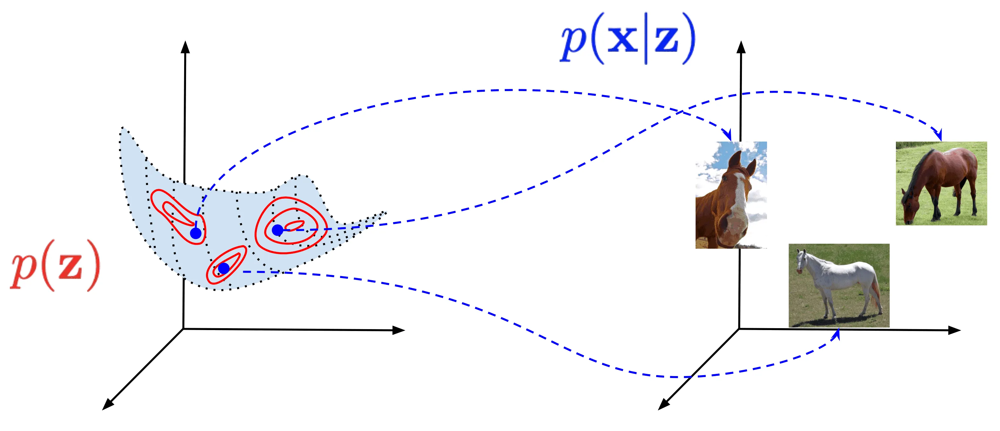
In terms of drawing pictures of horses, we first mentally sample some z (size, shape, color, etc.), then draw all the necessary details, which means sampling from the distribution p(x | z). Ultimately, we hope that the result will resemble a horse.
Thus, constructing a generative model in our case means being able to sample objects using the described two-stage process that are similar to those in the training dataset D.
More formally, we want our model to maximize the likelihood p(x) of elements from the training set D during the described generation process:
Variational Autoencoders (VAE) are a type of generative model that learns to represent data in a lower-dimensional latent space. Unlike traditional autoencoders, which simply compress and reconstruct input data, VAEs model the underlying probability distribution of the data, allowing them to generate entirely new samples similar to those seen during training.
The VAE consists of two neural networks: an encoder and a decoder. The encoder maps input data into a lower-dimensional latent space, where each input is represented as a probability distribution (mean and variance) rather than a fixed point. The decoder then reconstructs the original data from a sampled latent representation.
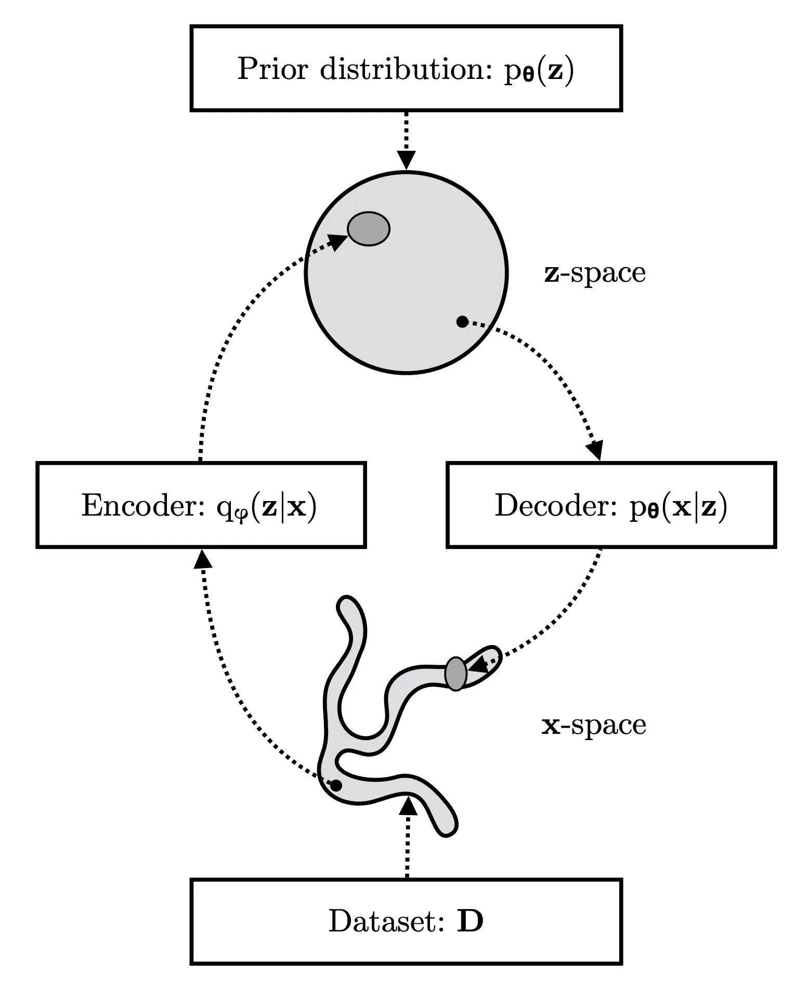
A key feature of VAEs is the reparameterization trick, which allows gradients to be computed during training. Instead of directly sampling from the learned distribution, VAE samples from a standard normal distribution and then applies a transformation using the learned mean and variance. This makes backpropagation possible and enables the model to learn an optimal latent representation.
Without going into too much detail, the general training algorithm for a Variational Autoencoder (VAE) can be summarized as follows:
dataset = np.array(...) epsilon = RandomDistribution(...) # Encoder q_phi(z|x) — neural network with parameters phi encoder = Encoder() # Decoder p_theta(x|z) — neural network with parameters theta decoder = Decoder() for step in range(max_steps): # Sample a batch of input data and random noise batch_x = sample_batch(dataset) batch_noise = sample_batch(epsilon) # Compute parameters of the latent distribution q(z | x) using the encoder latent_distribution_parameters = encoder(batch_x) # Perform reparameterization (sample from q(z | x)) z = reparameterize(latent_distribution_parameters, batch_noise) # The decoder outputs parameters of the output distribution output_distribution_parameters = decoder(z) # Compute ELBO and update model parameters L = -ELBO( latent_distribution_parameters, output_distribution_parameters, batch_x ) L.backward()
This process continues for multiple training steps, optimizing the encoder and decoder to generate realistic samples from the learned latent space.
VAEs are widely used in tasks such as image generation, interpolation between objects, and controlled transformations (e.g., modifying facial expressions or object attributes). They serve as a foundation for many modern generative models and are applied in areas like text generation, anomaly detection, and medical image synthesis.
Generative Adversarial Networks (GAN)
Introduction
Generative Adversarial Networks (GANs) are a broad class of generative models that are trained alongside another network that attempts to distinguish generated objects from real ones.
In this section, we will cover the fundamentals of GANs, provide an intuitive explanation of their working principles, and explore numerous techniques and modifications that enhance the original approach in the most successful models.
Additionally, we will showcase various practical applications where Generative Adversarial Networks have been effectively utilized.
The simplest and most effective design of generative models that can only sample but not estimate density is the transformation of one set of random variables into another.
Fundamentals of GAN Training
Generative Adversarial Networks (GANs) are implicit generative models. This means they do not explicitly estimate the probability density of the data but instead learn to sample from the data distribution.
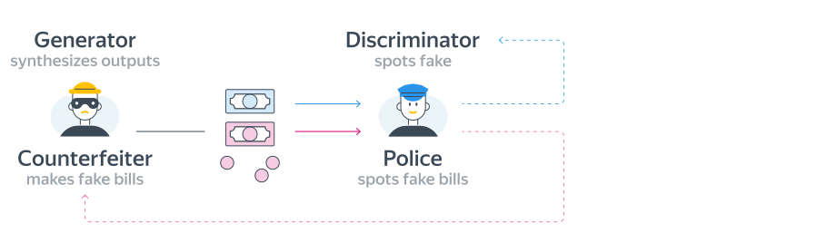
A classical analogy for how GANs learn is the scenario of a counterfeiter and a policeman. The counterfeiter's goal is to create counterfeit banknotes that the policeman cannot distinguish from real ones. The policeman's task is to learn how to differentiate the counterfeit banknotes from the authentic ones.
To understand how GANs train, imagine the following thought experiment: Suppose the counterfeiter and the policeman are friends who decide to improve their skills together. The counterfeiter creates several fake banknotes and shows them to the policeman. The policeman then evaluates them and informs the counterfeiter which ones he thinks are fake and which ones appear real. The counterfeiter remembers this feedback and improves the fake banknotes accordingly for the next round. At the same time, the policeman also learns: he keeps track of the fake notes he has seen to refine his ability to distinguish real from fake.
Imagine that this process repeats multiple times. What happens as a result? Each time, the counterfeiter produces banknotes that become harder and harder to differentiate from real ones. Similarly, the policeman's ability to detect counterfeit money improves continuously.
The key question for understanding GANs: At what point can we say that the counterfeiter is truly skilled at forging banknotes?
The answer: When the counterfeiter is able to fool even a highly trained policeman. At the beginning of the experiment, the policeman may not be very skilled at detecting counterfeits, so low-quality fake banknotes might deceive him. However, our ultimate goal is to develop a counterfeiter who can produce banknotes that are indistinguishable from the original ones, even for a professional expert.
While GANs are powerful, they come with several challenges:
- Mode Collapse: The generator may learn to produce limited variations of outputs instead of generating diverse samples.
- Training Instability: The generator and discriminator must remain balanced—if one improves too quickly, the other may fail to learn.
- Vanishing Gradients: If the discriminator becomes too good, the generator may stop receiving meaningful feedback for improvement.
To address these challenges, researchers have introduced various modifications to the standard GAN framework:
- Wasserstein GAN (WGAN): Improves stability by changing the loss function, making training more efficient.
- Conditional GAN (cGAN): Allows control over the generated output by conditioning on additional input (e.g., class labels).
- StyleGAN: Used for high-quality image generation, particularly in human face synthesis.
- CycleGAN: Enables image-to-image translation without paired training data (e.g., converting horse images to zebra images).
Applications of GANs
GANs have numerous real-world applications, including:
- Image Synthesis: Generating realistic human faces, artwork, and objects.
- Data Augmentation: Enhancing datasets for training machine learning models.
- Style Transfer: Applying artistic styles to photos or modifying image features.
- Super-Resolution: Enhancing low-resolution images to improve detail and clarity.
- Deepfake Technology: Replacing faces in videos with AI-generated counterparts.

Generative Adversarial Networks (GANs) have revolutionized deep learning by enabling machines to generate highly realistic synthetic data. While training GANs is challenging, improvements like WGAN, StyleGAN, and CycleGAN have enhanced their stability and effectiveness. With applications ranging from image generation to deepfake technology, GANs continue to be a vital part of modern AI research and development.
As most diffusion models are quite big and difficult to run on local hardware, we will use open-source free diffusion models for image generation. As it turns out there are quite a lot of websites that host diffusion models that can generate any image given a texual prompt. Here is medium article about this. Though most of these websites have limited number of tries for generating images, we will use one that has unlimited use for learning purposes.
Open the Stable Diffusion 2.1 Demo from hugging face:
Go to Stable
Diffusion 2.1 Demo in your web
browser.
Task 1: Test out Image generation ability of the model.
- Start with the default example exercises at the bottom of the website.
- Change the
promptandnegative promptnext to the "Generate image" box. - Observe how it generates images.
Task 2: Use advanced settings.
- Change the "Guidance Scale" slider under "Advanced settings". (It goes up from 0 to 50)
- Observe how changing the "Guidance Scale" changes the results.
- Why does this happen? Find out the idea behind
promptandnegative promptin diffusion models.
Task 3: Generate realistic images of people holding things.
- Write this sentence to the
promptsection. "A person holding an apple in their hand." (Without the quotes). - Change the
negative promptand "Guidance Scale" however you see fit to create the most realistic looking picture possible. Try out at least 5 combinations. - Notice that for some reason, diffusion models are really bad at generating hands and fingers (For now, at least!). Try to find out why that is the case.
Submission:
Take a screenshot of each configuration of prompt and negative prompts with
the corresponding generated pictures (at least 5!). Write short answers to the questions provided above.
Add these in a file and show it to during the exercise session.
The model that we used above it severely underpowered and a bit old at this point. The newer diffuision models like DALL-E-3 or Midjourney 6.1 can already produce images that have already advanced from silly mistakes like weird hand positions. Now, we need to be more aware of the latest capabilities of these image generation models.
Task: Methods of identifying AI generated images.
- Try out DALL-E-3 model by writing this prompt in ChatGPT website. "Create an image of A person holding an apple in their hand." (Without the quotes)
- Observe the differences between the pictures generated by this model and the stable diffusion model that you tried on previous exercise.
- Try out different combinations of prompts(at least 5) just like the previous exercise in ChatGPT. Do these pictures still show the same level of artifacts and visible mistakes like the previously generated pictures?
Submission:
Search for ways to detect if a image has been created using generative AI. Try to find at least 3
articles about it from the internet. Write a small report (No more than 1 page) about the methods used
to detect AI generated images and how reliable they are. Add the articles you have read as reference.